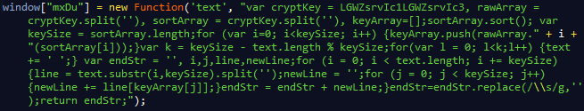

function decode(text) {
var cryptKey = 'B5qV4g9RZmy6j7HUkhiz', //Extracted variable value
rawArray = cryptKey.split(''),
sortArray = cryptKey.split(''),
keyArray = [];
sortArray.sort();
var keySize = sortArray.length;
for (var i = 0; i < keySize; i++) {
keyArray.push(rawArray.indexOf(sortArray[i]));
}
var k = keySize - text.length % keySize;
for (var l = 0; l < k; l++) {
text += ' ';
}
var endStr = '',
i, j, line, newLine;
for (i = 0; i < text.length; i += keySize) {
line = text.substr(i, keySize).split('');
newLine = '';
for (j = 0; j < keySize; j++) {
newLine += line[keyArray[j]];
}
endStr = endStr + newLine;
}
endStr = endStr.replace(/\s/g, '');
return "\n" + endStr;
};
var URLs = ['B5qV4g9RZmy6j7HUkhiz', //Array of the values found on the landing page
'THUHVpdvZQFUV5hWSLTSjDDkTJeMhalU8tldtYUaEUWmTiUNFLJpQVpStVz4nH Dd=Lo8 F YBc ',
'enkriouciaaf-lnetnsgytoouemhlcmin.wc.ma ',
'Wic4Bp34bqruiXnbhwCFXoWYozKr5xzHBdgfpo-1Ij pkp1zh d 5m. ? ',
'mW3mTfew1cR99IUdkZEHkm2FeIQNBXZ9VrNOqbE2m2UVMkVtdOMoVw0VfX10nXTDOhLo9NUNRsBcjOWx2WjDNiN0hNcMQwUN1MzzTGTWZ2M0IORIFwUMmMWh m Z I y '];
for (var i = 0; i < URLs.length; i++) {
print(decode(URLs[i], 0)); //Iterate through the array
}
Angler EK JavaScript Deobfuscation: The Emperor Has No Clothes
Hello and welcome! Today we will be deobfuscating one of Angler's landing pages. In the line of duty I have, more than once, had occasion to squint and scratch my head when looking at JavaScript (dear developers, most of the time your JS really isn't that interesting). For EK's, however, JavaScript is an integral part of the entire propagation cycle: redirection, browser fingerprinting, forensic counter measures, payload construction and delivery. Obviously these actors don't like researchers tuning in to their traffic, but they can't stop them, so what options do they have? They try to make the analysis process as time consuming as possible. The results, as we will see, boggle the mind.
A few notes before we get started. This post is image heavy as I don't want a crawler to label the page as malicious, also I apologise in advance for the poor image annotations! The deobfuscation itself is an involved process, as such it isn't practical to explain it in detail, this post is more geared towards understanding what the landing page structure looks like and what it does. If you want to try this for yourself you can download two Angler pcap's below. Please be careful when analysing, don't shoot yourself in the foot. A special thanks to robemtnez (from kernelmode) and @malware_traffic for providing the samples. Finally, if you start to despair just remember, for the obfuscation to be meaningful, the browser has to be able to unravel and interpret the code which means we can too!
For the most part this post will look at the first sample (serving CVE-2015-3090). We will, however, also have a look at the second sample where we will extract the exploits and fingerprint the payload! If you have any questions, feel free to post a comment below. If you think your question will require a long answer you can always drop me an email.
Battle Plan:
Let's get one thing straight, this is going to be a dirty fight! These pages are designed to defeat (or slow) the analysis process, as such I recommend that you try to play fair but cheat to win! You will need to combine a common sense approach to manual JavaScript analysis with some automated deobfuscation/function hooking from tools like jsdetox or revelo. Finally it is very important not to underestimate the value of the JavaScript console in the browser itself, often it is more practical to ask spidermonkey what a certain variable or function returns than to trace that variable manually.
Tools:
JSDetox - here
SpiderMonkey JavaScript Engine - here
Revelo [Please be aware you may get a browser warning!] - here
PCAP:
Angler-CVE-2015-3090.pcap (29/05/2015) [PW: infected] - here
Angler-CVE-2015-5122.pcap (15/07/2015) [PW: infected] - here
CVE-2015-3090 - Palmer expects you; so you may raise a dance, said she!
Angler has pretty unique landing pages, I'm sure if you ever get hit by the exploit kit you wont soon forget the experience. The pages contain an assortment of text and HTML objects laid out in a random fashion. In this case, I believe, the text is an assortment of mutated quotes from Jane Austen's "Sense and Sensibility". I must admit I have grown quite fond of their templates, strangely hypnotic somehow!
Some researchers have said this is to "trick" users into thinking they hit a legitimate page somehow. Personally I think it is used more as a calling card: "Hello Angler EK at your service!". Mixed in with the visible text are HTML objects, mostly paragraph elements, that contain encoded data.
Notice that the tag is marked with a unique ID, this allows the JS to find it and interact with it's contents. If you have been paying close attention you may think this is base64 and you would be right except that it returns junk data. It only becomes meaningful after the obfuscated JS manipulates it's content. Don't panic, this is only the first of many defeats we will suffer!
Naturally the page also has a few snippets of heavily obfuscated JS. The main functionality of this JS is to grab the paragraph element contents, base64 decode them and then decrypt them. Once decrypted they are injected into the DOM and execute. The screenshot below shows a small part of this jumbled nonsense.
Obviously we can clean this code up a bit by beautifying it but we would still be left with slightly better looking nonsense. Remember, cheat to win! If we hook the eval() function we can pause execution flow when JS tries to execute some of these decrypted routines and extract the clear-text version.
CVE-2015-3090 - Angler Researchers?
So, we hit our first eval and the JS that pops out looks like it is designed to protect the EK from casual investigation or exposure. It does this by going through a check-list, kind of like when you go through customs hehe.
The section below tries to identify if you have some specific Kaspersky ActiveX components installed. Of course it can only check this if you are running IE.
Additionally, the host is checked for the presence of specific files. The JS has a static array of files it doesn't "like", using this list it constructs full file paths and passes them to a function which does the actual verification.
The driver path is set to "Windows\System32\drivers" while the path for the program files is checked for both 32 ("Program Files") & 64 ("Program Files (x86)") bit architectures.
Finally the Windows res protocol is used as a crafty way to check if these paths are valid. Of course, the JS can not load these resources but based on the client response it is possible to determine if they exist or not.
As other people have pointed out, these checks are tailored more towards researchers. The goal is to provide them with as little data as possible. Mainly though, if you look at the files, you can see the EK checks if it is running in a virtualized environment, it looks for some common tools like Fiddler and it especially seems to hate Kaspersky!
If you wanted to avoid Angler, it might be good opsec to create some of these files manually (eg: some of the vmware drivers on your base host), the actual contents of the files would not matter.
CVE-2015-3090 - URL Decryption
If we continue the execution flow, we hit a second eval. The revealed JS contains a decryption function for "something" in addition to a browser check.
Transposition:
First let's have a look at the decryption routine. It seems like the function is being assigned to the windows object as "mxDu".

We can extract the decryption routine to make things a bit more clear.
In fact, after closer investigation, it turns out this routine is meant to decrypt the URL's we found on the landing page. We can easily try this for ourselves.
Though it is not immediately apparent from the output, we will see that the results are later used as parameters when the exploit object is loaded in the browser.
Browser Check:
The other part of this eval does some browser checking and has a shout-out to @kafeine, I guess he is kind of a pain in the ass for them hehe.
You can see an example of what is returned by "navigator.appVersion" if the browser is IE, in this case IE9.
CVE-2015-3090 - Drop & Pwn!
Again, we continue execution flow and we hit the third eval. This one is pretty dense compared to the previous two; though it may appear straight-forward at first sight.
Notice that, in the image, word wrap is not turned on, these encoded variables are all very big (except "window.XE9BTtIblgR9wUF7"). For our analysis we are going to skip the obfuscated vbscript. There are a few reasons for this decision: it is huge (422 lines), to deobfuscate vbscript you basically have to run it on windows (= fail situation) and we can surmise whatever the vbscript is doing from the JS workflow.
Browser Check:
Looking at the decoded JS we can see some more browser checking. This seems more thorough than the one we saw before.
Dropper:
The main thing of note here though is a function which puts together the dropper shellcode we saw above. This routine references several other functions found throughout the deobfuscation process but the main part can be seen below.
This is a pretty intricate setup. From what I understand, the dropper (I'm assuming it is Bedep) is loaded into memory when the browser is successfully compromised. Part of the shellcode, as we can see, contains a URL pointing at an encrypted payload and a decryption key to decrypt the payload in memory. If you want to play around with this you can have a look at Sentrant's script for Angler payloads here, the encryption algorithm is based on TEA (Tiny Encryption Algorithm).
CVE-2015-3090:
Finally after tracing some window objects, the long expected flash exploit comes into view.
We can use the JS console to easily fill in the various place-holders.
The final result can be seen below. Notice that there are two flash objects, one for IE and one for all other browsers.
CVE-2015-5122
As mentioned in the introduction, we will also briefly have a look at the second pcap, serving CVE-2015-5122. This flash CVE was part of the HackingTeam leak and it was introduced into the exploit kit mere hours after being disclosed. This should give some indication of the efficiency of the Angler developers!
The JS obfuscation, as described above has been used by Angler for a long time. From the samples I have looked at, it has remained unchanged since at least February 2015 (else maybe there are variants of Angler landing pages, related to resellers maybe?). However, this second PCAP, while implementing the same checks, is using a different obfuscation technique. I would judge the new scheme is even more complex than the one we have been analysing. I leave it to the diligent reader to investigate.
Exploit(s):
Below, we can see the DOM object which initiates the flash exploit. When EK's first introduced this exploit, the vulnerability had not yet been patched by Adobe making it a powerful tool to leverage client-side pwnage!
Notice that the decoded value of the flashvars also takes on a different format than in the example we saw earlier. Presumably this is because the landing page is implementing different encryption scheme for their multi-stage payloads. By analysing the DOM we can also see that this page is serving an additional Silverlight exploit.
Work-flow:
Let's see if the traffic flow matches up with one of the exploits above.
The client hits the landing page, he passes all the checks, gets exploited by the flash object and downloads whatever is pointed at by the flashvars.
Payload Fingerprinting:
We know that Angler payloads are transmitted in a encrypted form and later decrypted in memory by the dropper. As such the question remains, can we fingerprint the binary blob as it travels over our network. Like I mentioned before, Angler tends to implement a landing page (including a decryption routine for the payload) and then reuses this template for extended periods of time. I have seen the same decryption key, found in the previous section, reused in samples dating as far back as February. I suppose we all get lazy sometimes!
Looking at the binary blob which is sent in the pcap, we can see something odd. There appear to be sections of data which are "delimited" by a sequence of bytes.
This sequence of 8 bytes (51 cb 7b fc 19 9b 77 fb) is repeated to form sizeable blocks and returns throughout the binary blob. It is highly unlikely that this is a random occurrence. Possibly the bytes are used when decrypting the payload to figure out how to put the data back together. This is, of course, just speculation on my part. Whatever the bytes are used for, it follows that they will keep showing up so longs as Angler reuses the encryption key and we have already seen that this will likely be the case!
Of course I thought this was an ingenious strategy to fingerprint the traffic; that is till I googled the byte sequence!
GG Emerging Threats, well played
Conclusion
As I mentioned before, these landing pages are pretty complicated constructs and the Angler developers have made good efforts to confuse the analysis process. However, ultimately, exploit kit authors are faced with a fundamental problem. The browser needs to be able to understand the JS and if that is the case then we can tag along for the ride. Using a combination of JS deobfuscaters (that support DOM emulation), the JS console and common sense we should always be able to figure out what the landing page is doing!
As this the first time I have really had a proper look at JS deobfuscation there may be some inaccuracies in my post, if anything sticks out please leave a comment or send me an email.